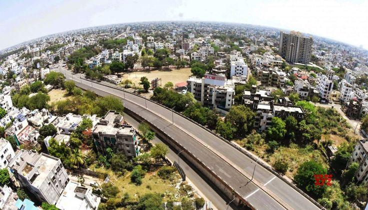
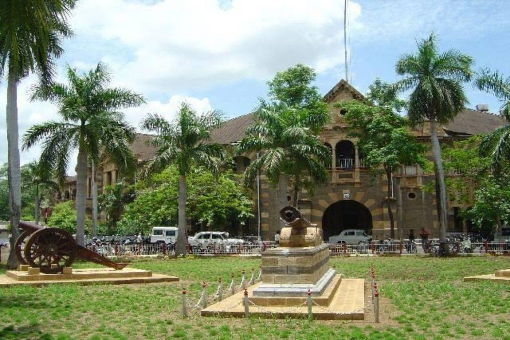
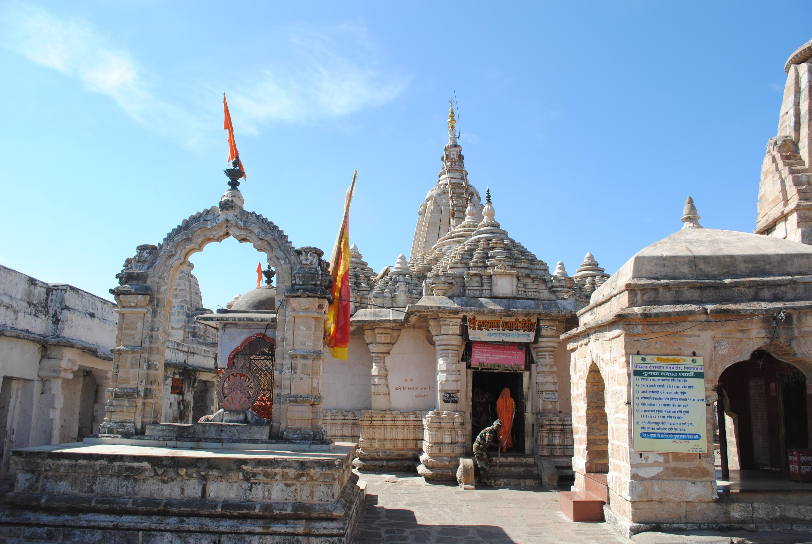
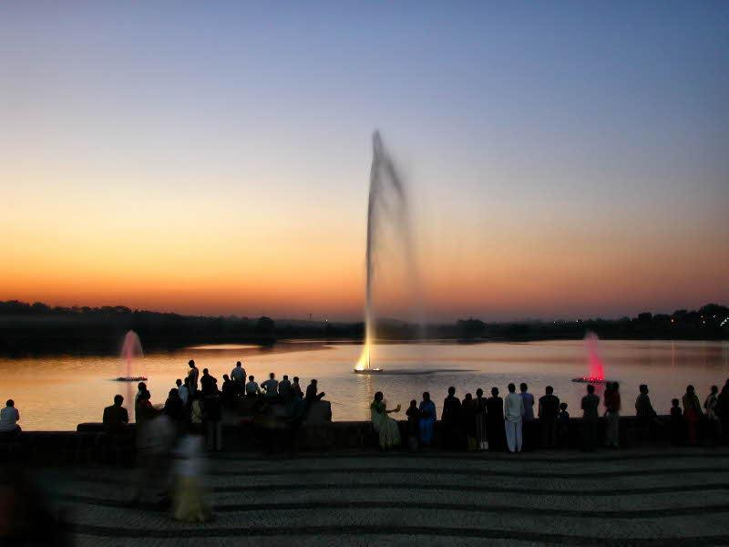
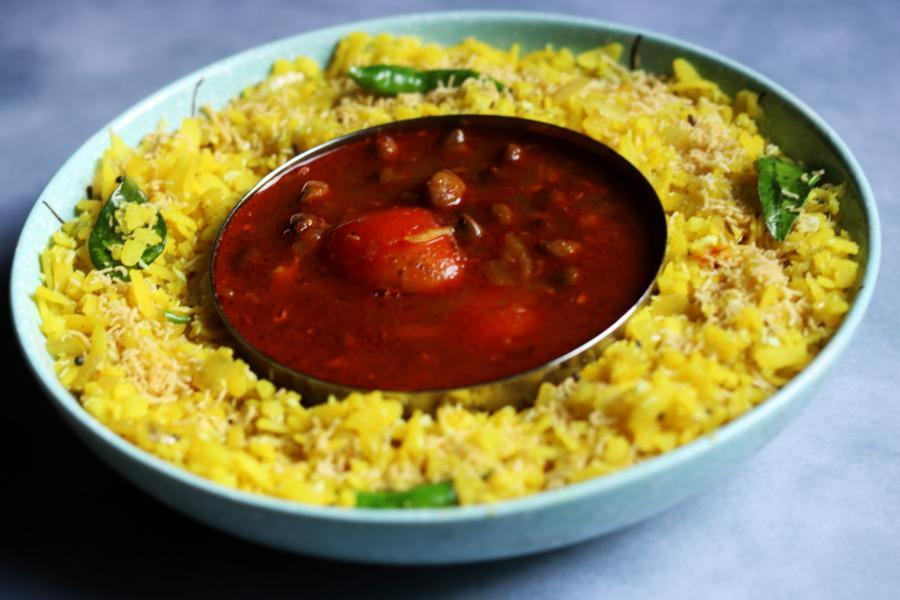
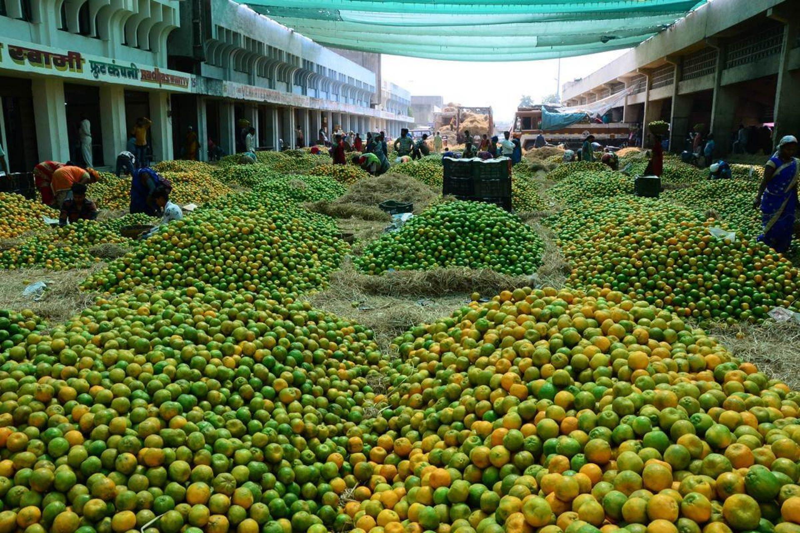
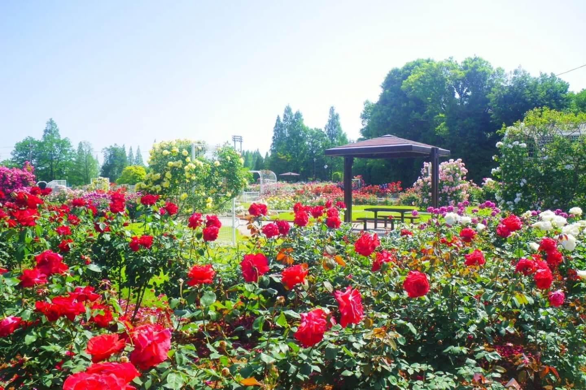
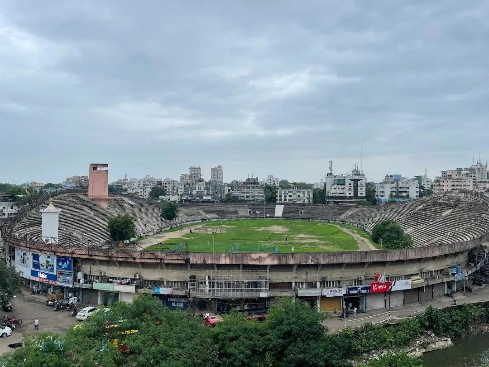

About

Nagpur lies along the Nag River and features the iconic "Zero Mile Marker" that was historically used by the British to measure distances across India. It serves as the seat for Maharashtra's annual winter legislative assembly sessions and is celebrated as a major trade center for the region's abundant citrus production. You can explore more background on Britannica's Nagpur Profile.
- Location:India’s geographic center, in the eastern region of Maharashtra.
- Famous as:The "Orange City" and the "Tiger Capital of India."
History

The city was founded in the early 18th century by Gond King Bakht Buland Shah of Deogarh. It later flourished under the Maratha Empire’s Bhonsale dynasty before coming under British control in the 19th century. Nagpur played a vital role in India's freedom struggle and is famous for the 1956 mass conversion of hundreds of thousands to Buddhism, initiated by Dr. B.R. Ambedkar. Read a detailed timeline on Wikipedia's Nagpur Page.
- Nagpur is in the eastern part of Maharashtra and marks the exact geographic center of India. It is famous around the world as the "Orange City" for its sweet citrus fruits and the "Tiger Capital of India" for its nearby wildlife parks.
Culture

Nagpur boasts a diverse cultural heritage shaped by various dynasties and a seamless blend of Marathi, Hindi, and Gond traditions. Major festivals like Diwali, Holi, and Ganesh Chaturthi are celebrated with great enthusiasm alongside unique local events like the Marabat and Badgyas procession, where effigies personifying social evils are burned. You can learn more about local traditions in the Maharashtra Tourism Nagpur District Guide.
- Main Festivals:Ganesh Chaturthi, Diwali, and the unique Marabat procession.
- Traditional Arts:Warli painting, Gond tribal art, and folk dances like Dandhar.
- Language:Marathi is the main language, but Hindi is also widely spoken.
Tourism

The region is heavily visited for both its heritage monuments and pristine nature. Key urban landmarks include the massive Deekshabhoomi stupa and the historic Sitabuldi Fort. Additionally, Nagpur is internationally famed as the "Tiger Capital of India" acting as the gateway to renowned wildlife reserves like the [Pench National Park](https://www. penchtiger.co.in) and Tadoba-Andhari Tiger Reserve.
- Deekshabhoomi: This is a massive and beautiful Buddhist stupa that can hold thousands of people. It is a very holy place where Dr. B.R. Ambedkar led a famous mass conversion to Buddhism in 1956.
- Sitabuldi Fort: This historic fort sits on top of a hill right in the middle of the city. It was the site of a major battle against the British and is now open to the public on special national holidays.
- Pench National Park: This famous tiger reserve is located just a short drive from Nagpur. It inspired the jungle in The Jungle Book and is one of the best places to see wild tigers, leopards, and deer.
Famous Food

Nagpur is a true foodie's paradise that seamlessly blends fiery flavors and comforting breakfasts. Its undisputed signature dish is Tarri Poha—flattened rice served with a spicy chickpea gravy. Other local favorites include Savji delicacies (extremely spicy and aromatic meat curries), Patodi Rassa, and world-class street-side samosas and jalebis.
- Famous Food:Tarri Poha—a popular breakfast made of flattened rice topped with a very spicy chickpea gravy.
- Local Specialty:Savji cuisine—extremely hot, fiery, and aromatic curries cooked with unique blends of local spices.
Economy

The economy is heavily driven by agriculture, trade, and rapidly expanding manufacturing sectors. As a major commercial hub, it hosts significant industrial estates and Special Economic Zones (SEZs), notably the Multi-modal International Cargo Hub and Airport at Nagpur (MIHAN), which serves as a major aviation and cargo logistics center.
- Key Industries:Information technology, multi-modal logistics at MIHAN, and heavy manufacturing.
- Main Crops:Oranges, cotton, soybeans, and rice.
Environment

Situated on the Deccan Plateau, the city experiences a tropical wet and dry climate. Despite being highly urbanized, Nagpur retains a green environment supported by places like the Japanese Rose Garden and Ambazari Lake. It is also home to the National Environmental Engineering Research Institute (NEERI), which conducts pioneering research in environmental science and ecology.
- Climate:Tropical wet and dry climate with very hot summers and mild winters.
- Key Rivers:Nag River, Kanhan River, and Pench River.
- Protected Areas:Pench Tiger Reserve, Tadoba-Andhari Tiger Reserve, and Umred Karhandla Wildlife Sanctuary.
Sports

Nagpur is a sports-obsessed city where cricket reigns supreme. It features major world-class venues like the Vidarbha Cricket Association (VCA) Stadium, which has hosted numerous international test matches and T20 events. The city also offers robust facilities for field hockey, football, and martial arts, nurturing emerging local talent.
- Traditional Sports:Kabaddi, Kho-Kho, and wrestling (known locally as Kushti).
- Focus:Nurturing young, grass-roots talent for national tournaments and building modern stadium infrastructure.